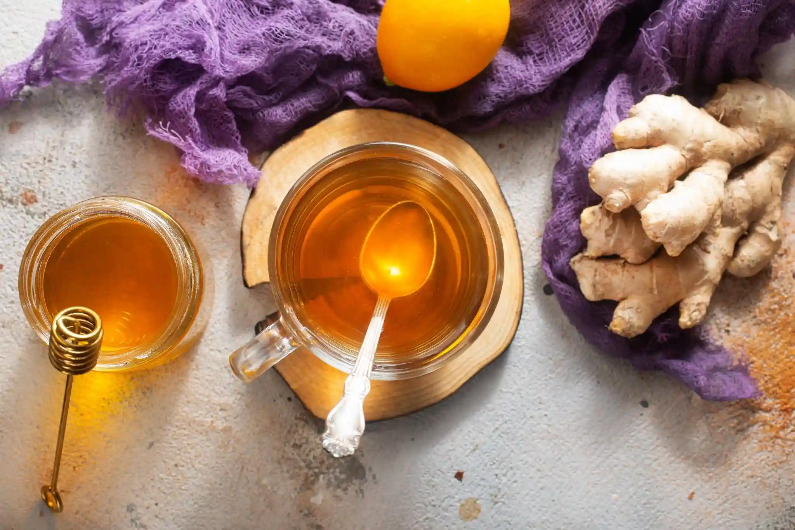

Ginger Turmeric Herbal Tea
This warming, anti-inflammatory tea blends ginger, turmeric, and cinnamon!
Go to Entry 9 ✿
Ingredients
- 2 cups water
- half teaspoon ground turmeric
- half teaspoon chopped fresh ginger
- half teaspoon ground cinnamon
- 1 tablespoon honey
- 1 lemon wedge

Instructions
- gather ingredients
- bring water to a boil in a small saucepan, add turmeric, ginger, and cinnamon
- reduce heat to medium low and simmer for 10 minutes
- strain tea into a large glass
- stir in honey and serve with lemon wedge